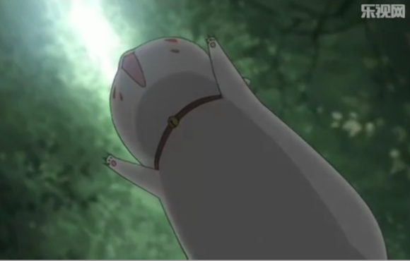
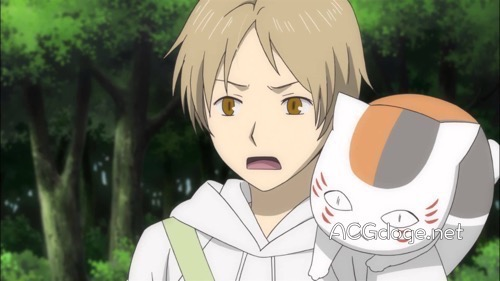
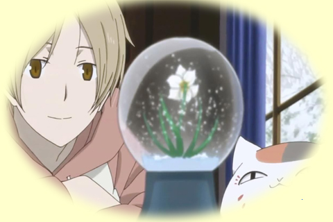
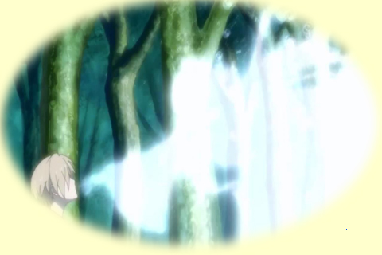

 
在LaLa（白泉社）2013年8月号刊上，绿川幸老师的「夏目友人帐」宣布制作新作动画OVA，收录有OVA动画的DVD将作为全员应募的商品发送给读者，价格是1350日元。 据悉，此次新作动画DVD收录的是TV动画「夏目友人帐」第四季以后，首次新原创的故事「猫咪老师首次变身使者」，故事围绕正在悠闲散步中的猫咪老师突然偶遇迷路的双胞胎兄妹而展开。TV动画版的工作人员、声优演员们再次为新作而集结，剧本仍是大森贵弘总监督亲自执导。同时，该新作动画的DVD也将收录其中声优饰演角色的座谈会实况录像。简介：散歩中的猫咪老师遇到了一对迷路的双子兄妹，从而展开了一段奇妙的故事。
 
漫画家绿川ゆき（绿川幸）的生涯代表作《夏目友人帐》自从2003年诞生以来，不仅靠着奇幻的鬼神设定与幽谧的温馨故事而博得广大读者的喜爱，先后改编四次的电视动画版也深深受到动漫迷的支持。适逢本作诞生10周年，官方为了盛大庆祝，除了已经在2013年9月28日举行的「音乐朗读剧」以外，也正式发表全新动画版的情报。 OVA《夏目友人帐 ～いつかゆきのひに～》（下雪的日子里）将会描述一段全新故事。尽管制作群与故事大意尚未公开，但是已经制作全四期电视动画的默契团队－－动画监督大森贵弘×人物设计师高田晃×ブレインズ・ベース（Brain’s･Base）原班人马－－应可望继续加入。此外，上周六（2013年9月28日）的那一场音乐朗读剧《SOUND THEATRE x 夏目友人帐～集い 音剧の章》精采表演内容，也会作为 Disc 2 共同推出！